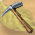
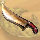
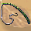
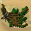 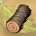 彩花村 迦蘭谷地 彩花村 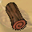 迦蘭谷地 彩花村 迦蘭谷地 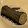 迦蘭谷地 遺忘森林 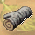 遺忘森林 迦蘭谷地、摩摩島 遺忘森林 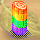 摩摩島 遺忘森林 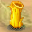 摩摩島 遺忘森林 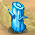 摩摩島 遺忘森林 |
| Top >> |
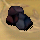 卡拉斯山區 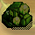 卡拉斯山區、甘泉村 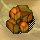 卡拉斯山區、甘泉村 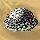 卡拉斯山區 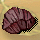 卡拉斯山區 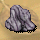 卡拉斯山區 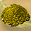 甘泉村 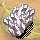 甘泉村 狂風沙漠 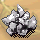 甘泉村、卡拉斯山區右上角 狂風沙漠 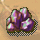 甘泉村、卡拉斯山區右上角 狂風沙漠 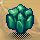 狂風沙漠 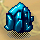 哈辛島(45,89) 狂風沙漠 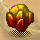 哈辛島(45,89) 狂風沙漠 |
| Top >> |
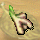 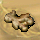 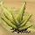 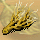 飛魚角 彩花村 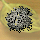 飛魚角 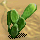 以利暗沙漠 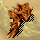 以利暗沙漠 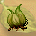 迦蘭谷地 彩花村 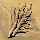 迦蘭谷地 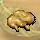 飛魚角、迦蘭谷地 彩花村 飛魚角 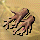 迦蘭谷地 風之谷 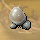 |